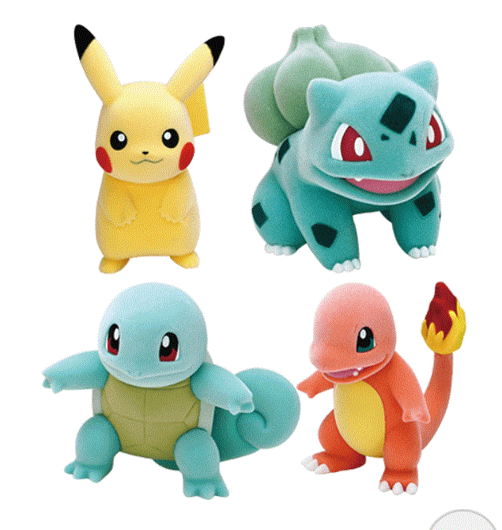

CZ
Portfolio:zhangcan.com
Email:zhenzhenqi@gmail.com
Education
Wrote a cyber fiction on pissing in the universe
Major:Public Finance
Minor:Daydream
Skills
Office Skills
Adobe Photoshop,
Computer Skills
HTML, CSS Javascript, C#
Experience
Super Mario Odyssey Overload
- like to eat mushroom
- cannot clear the first kingdom
- considering about change another game